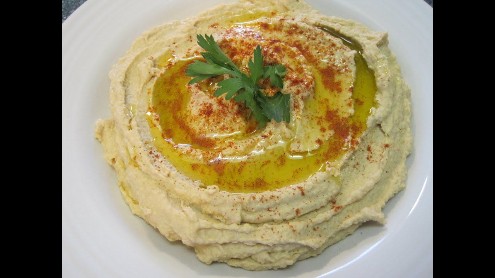

Teta's Hummus

Description
Hummus is a creamy middle eastern chickpea based dip. It is a vegan dip packed with protein from the chickpeas and healthy omega fatty acids from the olive oil.
The health benefits are many, and it's also a snap to make. I think Teta's way tastes better, hand-mashed with a fork and a shallow bowl, but it's super easy to whip up in a blender or a food pro.
Ingredients
- Chickpeas, cooked
- Tahini
- High quality extra virgin olive oil
- Lemon juice
- Garlic, peeled and mashed
- Sea salt, fine
- Cumin, ground
- Water
Steps
- Add chickpeas, tahini, lemon juice, garlic, salt, and half of the olive oil into a shallow bowl and mash together with a fork.
As a dry paste begins to form, add the rest of the olive oil.
- Continue mashing and slowly adding water to achieve a smooth and creamy consistency.
- Finish by adding cumin and salt to taste.